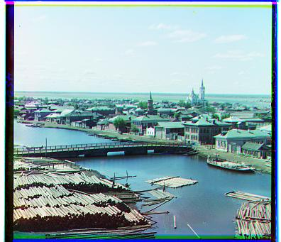

Project 1: Colorizing the Prokudin-Gorskii photo collection
Introduction
In the 1900s, Sergei Mikhailovich Prokudin-Gorskii traveled all across the Russian Empire, taking color pictures through exposures of whatever he wanted to capture onto a glass plate, with three color filters: red, green, and blue. However, at his time, there was no way to print these color photographs or share them widely.
Luckily for him, he has all of CS180 working on reconstructing his glass plates to produce color images!
In this project, I produce color images from these colored plates with a variety of image processing techniques. I start with the most basic direct overlap of the plates, move on to alignment within a fixed displacement window, minimizing pixelwise difference between colored plates, and finish with a more efficient, recursive image pyramid alignment algorithm. Enjoy!
Part 0: direct overlap
First, I try the most naive algorithm: directly overlapping the red, green, and blue plates, after splitting the three color exposures in one image file in three. As you can see on the three smallest images, alignment is quite poor. Looks like I will have to devise an algorithm to better align the images.
Part 1: naive alignment algorithm

Cathedral
G displacement: (2, 5)
R displacement: (3, 12)
Time taken: 0.694 seconds

Monastery
G displacement: (2, -3)
R displacement: (2, 3)
Time taken: 1.460 seconds

Tobolsk
G displacement: (2, 3)
R displacement: (3, 6)
Time taken: 0.747 seconds

Emir
G displacement: (24, 49)
R displacement: (43, 49)
Time taken: 763.745 seconds
The next algorithm I try searches over all displacements in a specified range [-15, 15] to minimize the pixelwise difference between color plates. I tried both NCC (noramlized cross correlation) and Euclidean distance, and since minimizing Euclidean distance between pixel values yielded better qualitative results I stuck with it for the rest of the project. At first, I was accidentally aligning the blue to green and blue to red, instead of vice versa. The switched order of which I was aligning to caused my photos to look off a bit. After fixing this bug, I aligned the red and green plates to the blue plate and achieved fairly aligned results for the small images.
Additionally, I only took the difference of the center 90% of the images, to reduce the effect of discrepancies across edges when calculating alignment.
Trying my naive algorithm on a larger image (emir.tif) I noticed misalignment. I kept increasing the window of displacements to search, but getting to 25x25 or 50x50 increased the runtime (listed below the image) so much that this was a sign for me to move on to a more efficient, image pyramid implementation. Because I iteratively search through every possible combination of (x, y) displacement, the search time scales quadratically with the search window size.
It didn't make sense to keep increasing the search window, as it was taking too long.
Part 2: image pyramid!

Cathedral
G displacement: (2, 5)
R displacement: (3, 12)
Time taken: 0.194 seconds
Church
G displacement: (3, 25)
R displacement: (-5, 58)
Time taken: 16.877 seconds
Emir
G displacement: (24, 49)
R displacement: (44, 88)
Time taken: 16.609 seconds
Time for efficiency!
In this part, I implemented a faster search procedure with a image pyramid. I resized the images to create a pyramid of images from coarse to fine, and at each level of the pyramid I ran the same naive alignment algorithm. This way, I could efficiently hone in on the best displacement without having to search a large area at each level.
For the image pyramid, it took me a while to figure out how to store the shift from one level of the pyramid to another and convert it. Since I went from coarse to fine with a 2x zoom until the original image size was reached, I just multipled the displacement from the previous level by 2 so it was accurate for the new level. With some level of experimentation, I realized I could shrink the search size down to [-6, 6] pixels, which helped runtime results. I experimented with a different number of levels of image pyramid and found that 6 levels seemed to do well, achieving an effective balance of precision and runtime.
I'm mostly happy with the results of my images. The only one that seems to struggle with alignment is emir.tif, which I believe could be improved thorugh Bells and Whistles.
Part 3: all results, plus some extras!
Harvesters
G displacement: (16, 60)
R displacement: (13, 124)
Time taken: 18.878 seconds
Icon
G displacement: (17, 41)
R displacement: (23, 89)
Time taken: 20.355 seconds
Italil
G displacement: (21, 38)
R displacement: (35, 77)
Time taken: 24.529 seconds

Lastochikino
G displacement: (-2, -3)
R displacement: (-9, 76)
Time taken: 19.025 seconds
Lugano
G displacement: (-17, 41)
R displacement: (-29, 93)
Time taken: 18.547 seconds
Melons
G displacement: (9, 82)
R displacement: (11, 177)
Time taken: 19.345 seconds
Self Portrait
G displacement: (29, 79)
R displacement: (34, 175)
Time taken: 19.601 seconds
Siren
G displacement: (-7, 49)
R displacement: (-25, 96)
Time taken: 18.658 seconds
Three Generations
G displacement: (13, 55)
R displacement: (10, 112)
Time taken: 18.533 seconds

Tobolsk
G displacement: (2, 3)
R displacement: (3, 6)
Time taken: 0.204 seconds
Irrigation Canal
G displacement: (24, 27)
R displacement: (49, 46)
Time taken: 24.664 seconds
Mills
G displacement: (14, 56)
R displacement: (22, 124)
Time taken: 17.607 seconds
Monastery
G displacement: (1, 34)
R displacement: (3, 9)
Time taken: 0.883 seconds
Railroad
G displacement: (5, 10)
R displacement: (4, 116)
Time taken: 19.559 seconds
Village
G displacement: (14, 34)
R displacement: (23, 86)
Time taken: 17.174 seconds
Lady
G displacement: (8, 55)
R displacement: (12, 111)
Time taken: 13.721 seconds
Onion Church
G displacement: (26, 51)
R displacement: (36, 108)
Time taken: 12.147 seconds
Sculpture
G displacement: (-11, 33)
R displacement: (-26, 124)
Time taken: 13.398 seconds